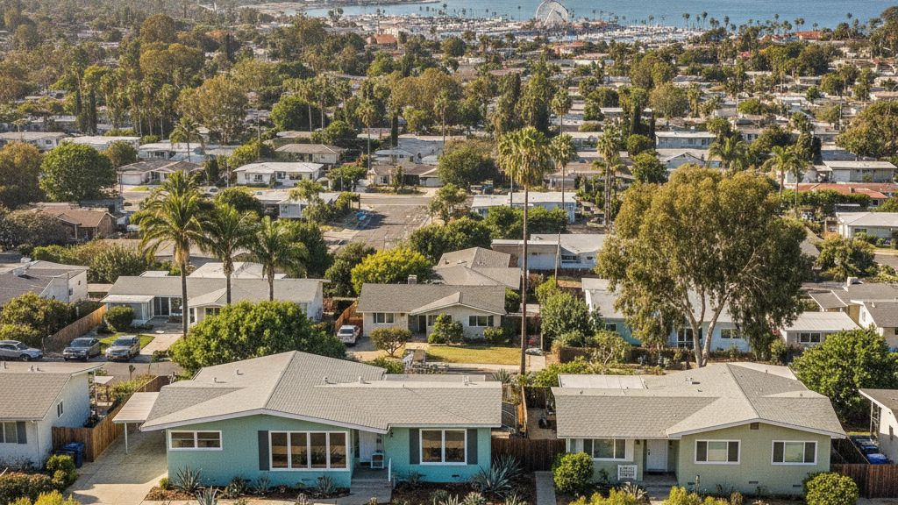

The Tierrasanta Housing Market
Most homes date from the 1970s and 1980s, with a Spanish and Mediterranean look, tile roofs, and stucco in repeated plans by several builders. Detached houses sit beside condominiums and townhomes organized into numbered communities and separate HOAs, so a wide range of fees applies from one tract to the next. Lots are generally smaller than in the older mesa communities, but canyon-rim parcels can be larger and more private. Prices are in the middle to upper-middle part of the city. The Tierrasanta Town Center and several neighborhood parks supply the commercial and recreational base.
What Shapes Value in Tierrasanta
Appraisers need to know which HOA a property belongs to, since dues and covered services affect comparability. Canyon lots can involve slope, drainage, and brush management obligations, and some homes look into open space while others face busy interior streets. Condominium sales should be sorted by complex rather than treated as one market.
Local Landmarks and Amenities
Mission Trails Regional Park, Tierrasanta Town Center, the Admiral Baker area, Murphy Canyon, and the Tierrasanta Recreation Center are central landmarks.
I am a trustee for a Tierrasanta townhome. Why does the appraiser ask for the HOA documents?
Monthly dues, special assessments, and rules on rentals or renovations can change what a buyer would pay, and they differ by community. The appraiser compares the townhome mainly with sales from the same HOA or a very similar one. Documents also confirm whether a pending assessment should be reflected in the value.
